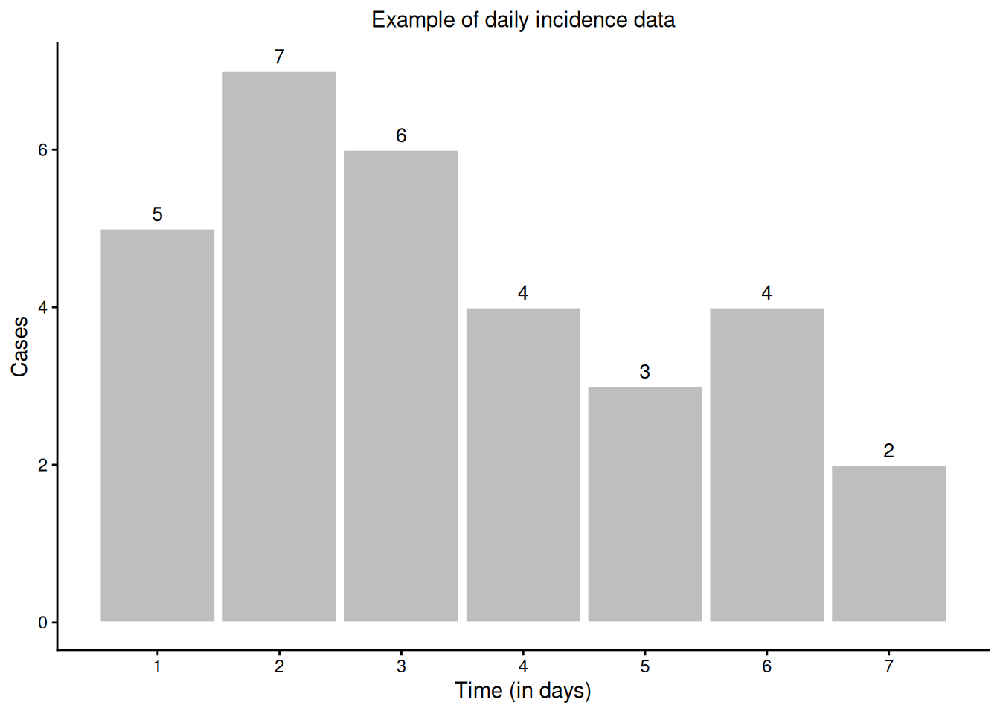
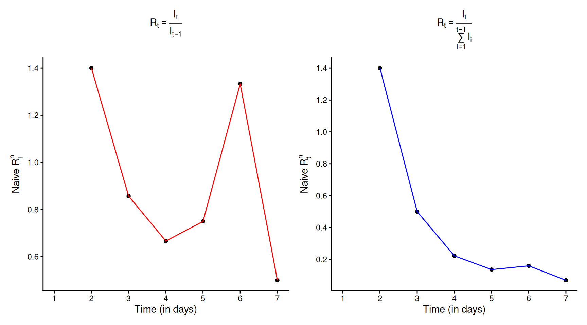
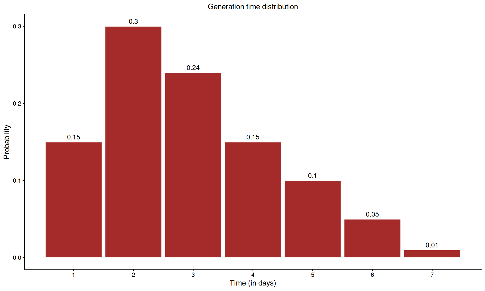
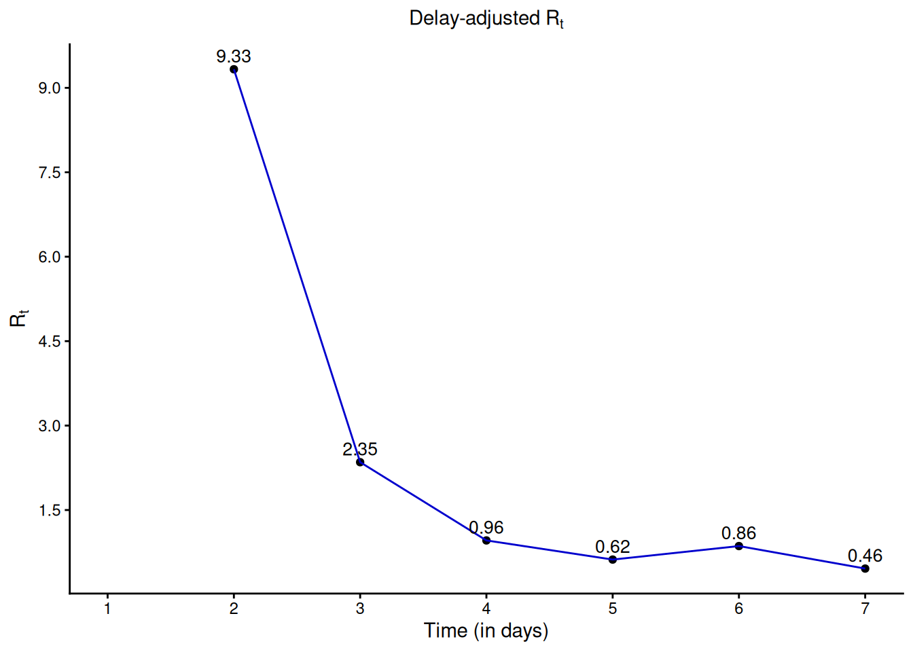
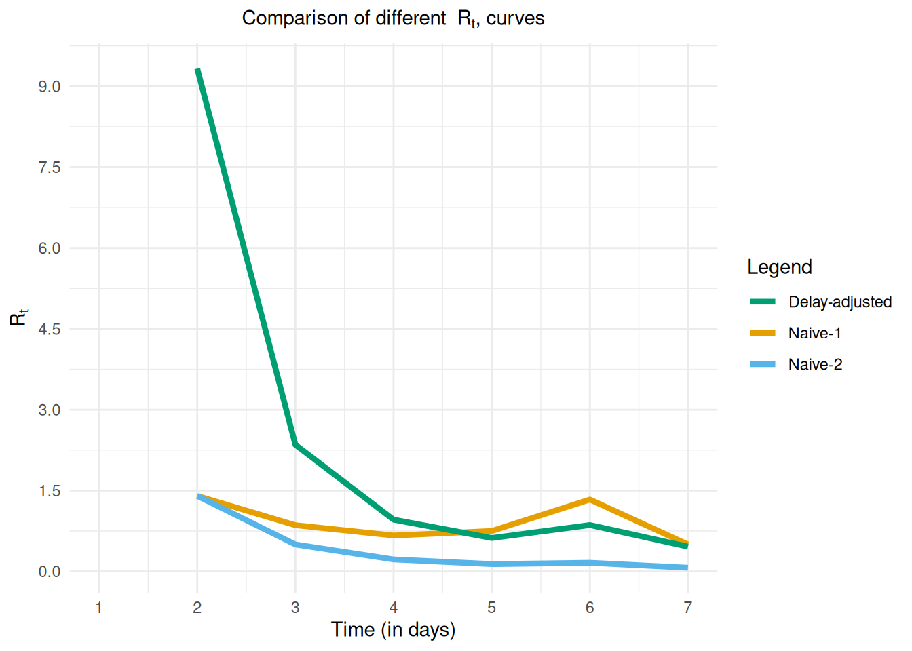

Apêndice A — Introdução à equação de renovação
NotaPerguntas
- Como os atrasos são levados em conta ao estimar \(R_t\)?
DicaObjetivos
- Familiarizar-se com a equação de renovação
- Mostrar como os atrasos são incorporados à equação de renovação
- Compreender os mecanismos por trás do
{EpiNow2}
Introdução
O pacote {EpiNow2} utiliza a equação de renovação para produzir estimativas robustas do número de reprodução efetivo \(R_t\), que são então usadas para gerar projeções. Neste episódio, apresentamos uma explicação intuitiva do mecanismo matemático por trás do método, com foco em como os atrasos são incorporados aos dados de incidência.
Estimativa ingênua de \(R_t\)
Imagine que temos uma série de casos diários de incidência, como mostrado na figura abaixo, e queremos calcular \(R_t\).
Como definido nos episódios anteriores, \(R_t\) representa o número médio de novas infecções geradas por um único indivíduo infeccioso no tempo \(t\). Interpretando essa definição diretamente, poderíamos estimar \(R_t\) como a razão entre as novas infecções no tempo \(t\) (\(I_t\)) e os indivíduos infecciosos ativos no tempo \(t-1\), denotados por \(I^*_{t-1}\), que é a soma das infecções anteriores do histórico recente:
\[I_{t-1}^{*} = I_{t-1} + I_{t-2} + I_{t-3} + \ldots I_{t_s} \text{for} \; s \in \{1, 2,3,\ldots t-1\}\]
Para fins práticos, geralmente não é necessário incluir todo o histórico; limitar a soma às infecções recentes costuma ser suficiente. No entanto, matematicamente, poderíamos estender o cálculo até os primeiros dados de incidência. Assim, esse \(R_t^n\) ingênuo é dado por: \[ R_t^{n} = \frac{I_t}{I^*_{t-1}} = \frac{I_t}{\sum\limits_{s=1}^{t-1}I_{t-s}}. \] Se restringirmos a noção de “histórico recente” apenas ao dia anterior, \(t-1\), então simplesmente \(I^*_{t-1} = I_{t-1}\) e \[ R_t^{n} = \frac{I_t}{I_{t-1}}. \] A aplicação dessas abordagens aos nossos dados de incidência de exemplo resulta nos diferentes valores correspondentes de \(R_t\), como mostrado nas figuras abaixo

As diferenças observadas nas curvas de \(R_t\) mostradas nas figuras acima levantam duas questões importantes:
Qual é a duração do “histórico recente”? Até quando devemos retroceder para incluir todos os casos infecciosos ativos capazes de gerar novas infecções? A resposta é que não devemos ir longe demais: com o passar do tempo, as infecções anteriores contribuem menos para a transmissão devido ao curso natural da dinâmica de infecção.
Todas as infecções anteriores têm a mesma capacidade de causar novas infecções? A resposta é não. As infecções mais recentes ainda estão nos estágios iniciais de replicação viral e têm maior probabilidade de transmitir, enquanto infecções mais antigas têm infecciosidade reduzida.
Ambas as perguntas estão intimamente relacionadas e dizem respeito aos atrasos: o que observamos no tempo \(t\) são os resultados de eventos passados. Levar em conta esses atrasos adequadamente é essencial para produzir estimativas robustas e precisas de \(R_t\).
Estimativa de \(R_t\) ajustada pelo atraso
Agora, suponha que temos acesso a uma distribuição de probabilidade para o tempo de geração da doença, que descreve a probabilidade de um indivíduo infectado transmitir a infecção ao longo do tempo, como ilustrado na figura abaixo.

Essa distribuição nos diz a probabilidade de um indivíduo infectado transmitir a infecção em diferentes momentos após ser infectado.
Equação de renovação
A equação de renovação fornece uma maneira natural de incorporar atrasos no cálculo de \(R_t\) e aborda diretamente as duas questões importantes que levantamos anteriormente. Ela é definida como:
\[ R_t = \frac{I_t}{\sum\limits_{s=1}^{\tau} I(t-s)*\omega(s)}, \; \tau \in \{1,2,3, \ldots, t-1 \}\] onde:
\(\omega(s)\) é a probabilidade de um indivíduo gerar uma nova infecção em \(s\) dias após ser infectado,
\(I_{t-s}\) é o número de infecções que ocorreram \(s\) dias antes do tempo atual \(t\).
Aqui, \(\tau\) determina até onde devemos olhar para trás no histórico recente, enquanto o termo \(I(t-s)*\omega(s)\) atua como um operador de convolução. Ele pondera a contribuição das infecções no dia \(t-s\) para as infecções observadas no dia \(t\), de acordo com a probabilidade de gerar novas infecções com um atraso de \(s\) dias, dada por \(\omega(s)\).
Vamos calcular \(R_t\) em \(t=2,4\) usando a equação de renovação.
Caso: \(t=2\)
A partir dos dados de incidência, temos \(I_1 = 5\) e \(I_2 = 7\). A partir da distribuição do tempo de geração, temos \(\omega(1) = 0.15\). Substituindo na equação de renovação, obtemos: \[R_2 = \frac{I_2}{I_1*\omega(1)} = \frac{7}{5*0.15} = 9.33\]
Caso: \(t=4\)
A partir dos dados de incidência, temos \(I_3 = 6\) e \(I_4 = 4\). A partir da distribuição do tempo de geração, temos \(\omega(1) = 0.15, \omega(2) = 0.30\) e \(\omega(3) = 0.24\). \[R_4 = \frac{I_4}{I_3*\omega(1)+I_2*\omega(2)+I_1*\omega(3)} = \frac{4}{6*0.15 + 7*0.3+5*.24} = 0.95\]
DicaDesafio
Você consegue fazer isso?
- Calcule \(R_t\) no tempo \(t = 3, 5, 6,\) e \(7\).
NotaSolução
Aplique a fórmula para obter:
Caso: \(t = 3\) \[ R_3 = \frac{I_3}{I_2*\omega(1) + I_1*\omega(2)} = \frac{6}{7*0.15 + 5*0.3} = 2.35\]
Caso: \(t = 5\)
\[ R_5 = \frac{I_5}{I_4*\omega(1)+ I_3*\omega(2)+ I_2*\omega(3)+I_1*\omega(4)}\] \[ = \frac{3}{4*0.15+6*0.3+7*0.24+5*.15}= 0.62\]
Caso: \(t=6\)
\[ R_6 = \frac{I_6}{I_5*\omega(1)+I_4*\omega(2)+I_3*\omega(3)+ I_2*\omega(4)+I_1*\omega(5)} \] \[ = \frac{4}{3*0.15 + 4*0.3 + 6*0.24+7*0.15+ 5*0.1} = 0.86\]
Caso: \(t = 7\)
\[ R_7 = \frac{I_7}{I_6*\omega(1)+I_5*\omega(2)+I_4*\omega(3)+I_3*\omega(4)+I_2*\omega(5)+I_1*\omega(6)}\] \[ = \frac{2}{4*0.15+3*0.3 + 4*0.24+6*0.15+7*0.1+5*0.05} = 0.46\]
Depois de calcular o \(R_t\) ajustado pelo atraso para \(t = 2,3,..., 7\), podemos traçar sua curva, como mostrado na figura abaixo.

DicaDesafio
\(R_t\) ingênuo vs ajustado
- Que diferenças você nota entre o \(R_t\) ajustado pelo atraso e o \(R_t^n\) ingênuo?
NotaDica
Esta figura pode lhe dar uma pista

NotaSolução
Ambas as estimativas ingênuas podem subestimar o valor de \(Rt\) nos estágios iniciais da epidemia. Além disso, a Naive-1 é mais sensível a aumentos repentinos na notificação de novos casos incidentes, como relatado para o dia 6.
Projeção de casos futuros
Depois de estimar os valores de \(R_t\) até o tempo atual \(t\), podemos reorganizar a equação de renovação para prever a incidência no tempo \(t+1\) da seguinte forma:
\[ \bar{I}_{t+1} = R_t*\sum\limits_{s=1}^\tau I_{t-s}*\omega(S)\] Aplicando isso ao nosso exemplo, obtemos \[\bar{I}_8 = 0.46* (2*0.15+4*0.3+3*0.24+4*0.15+6*0.1+7*0.05+5*0.01) = 1.76 \approx 2.\]
NotaDetalhes
É isso que o {EpiNow2} faz?
- Até certo ponto, sim. O que descrevemos é a forma mais simples da equação de renovação, que leva em conta apenas a distribuição do tempo de geração.
- O pacote {EpiNow2} vai além ao adicionar recursos extras, como:
- Levar em conta a incerteza na distribuição de atraso (por exemplo, fornecendo intervalos de confiança de \(95\%\) para \(\omega(s)\), que são então usados para gerar estimativas inferiores e superiores de \(R_t\) e da incidência projetada).
- Incorporar distribuições de atraso adicionais (como períodos de incubação) por meio do mesmo processo de convolução, gerando estimativas mais robustas.
- Usar métodos estatísticos avançados e ferramentas computacionais para tornar o processo de estimativa tanto mais rigoroso quanto mais rápido.
- Levar em conta a incerteza na distribuição de atraso (por exemplo, fornecendo intervalos de confiança de \(95\%\) para \(\omega(s)\), que são então usados para gerar estimativas inferiores e superiores de \(R_t\) e da incidência projetada).
NotaPontos-chave
- Compreender a forma básica das equações de renovação
- Compreender como os atrasos são levados em conta no {EpiNow2}
- Compreender como o {EpiNow2} faz projeções